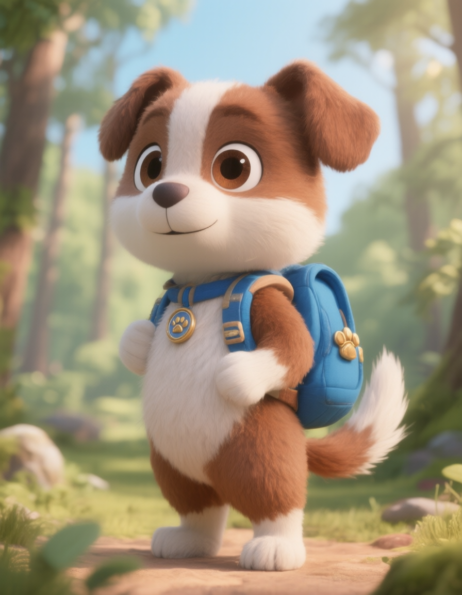
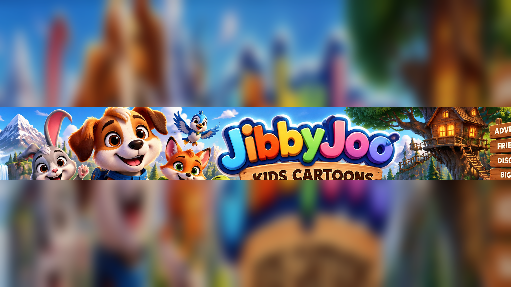
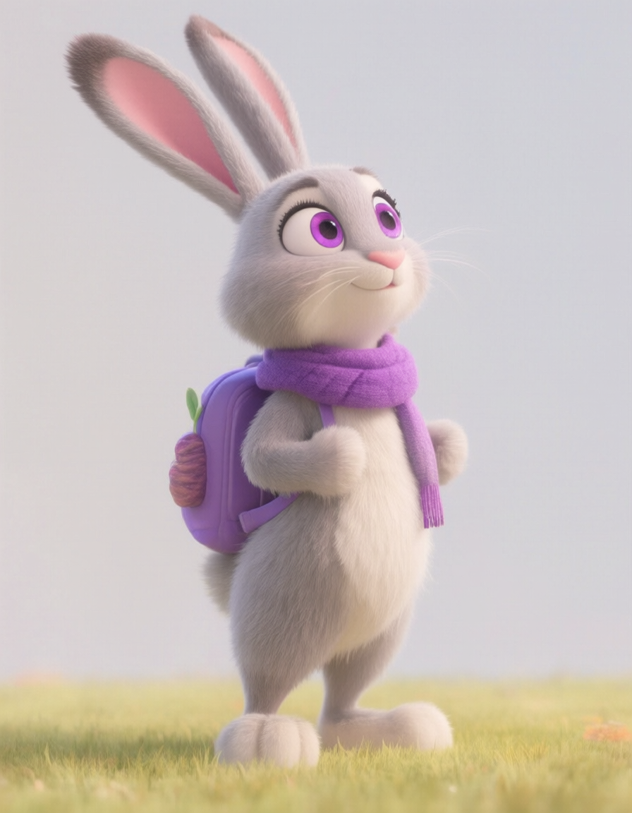
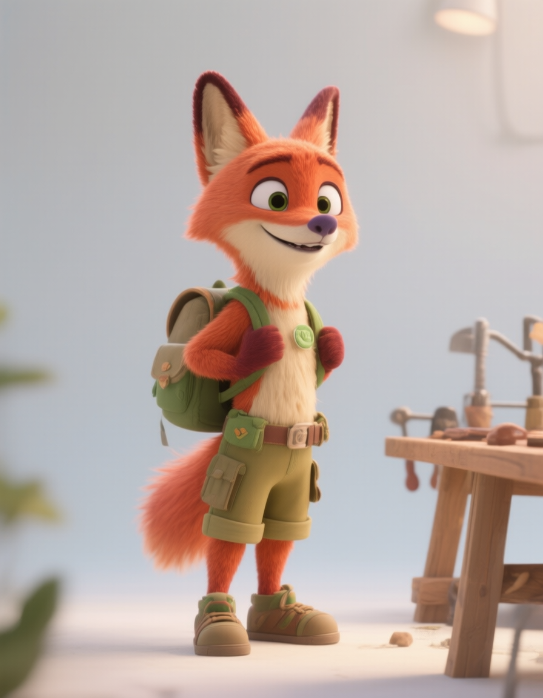
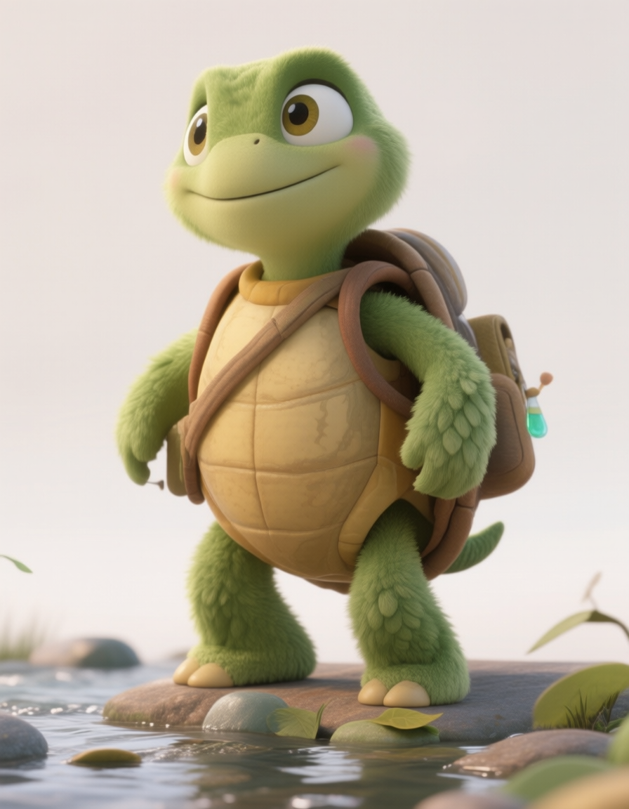
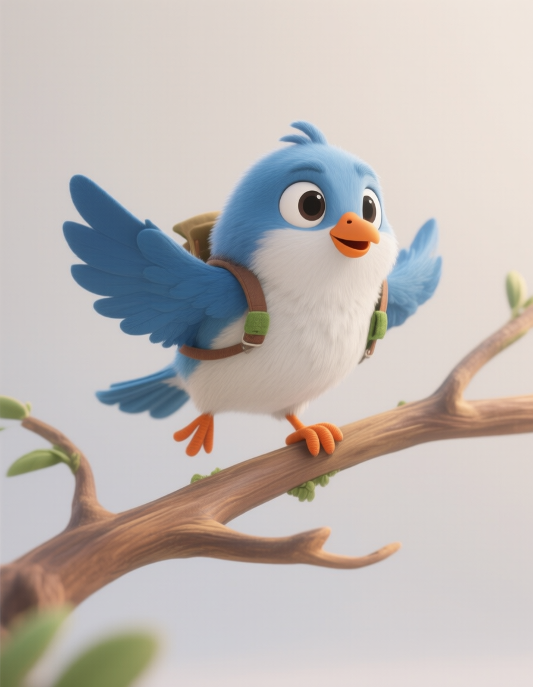

Jibby
Curious heart of the groupJibby asks the big question, tries new things, and keeps the friends moving.

JIBBYJOO KIDS CARTOONS
Join Jibby, Pippa, Fenn, Tilly, and Pip for colorful stories about curiosity, friendship, problem solving, and discovery.
Meet the friendsJIBBYJOO ADVENTURES
JibbyJoo Kids Cartoons is a colorful animated adventure series for kids ages 3 to 7 and the grown-ups watching with them. Every story begins with a visual mystery, funny problem, or question, then lets the characters discover the answer through action.
The series is joyful, reassuring, and smart without becoming a lecture. Friendship, cooperation, curiosity, emotional regulation, and safe choices appear naturally inside the adventure.
MEET THE FRIENDS

Jibby asks the big question, tries new things, and keeps the friends moving.

Pippa notices patterns, spots clues, and helps everyone slow down to think.

Fenn builds, tests, laughs at funny failed tries, and comes back with a better idea.

Tilly listens carefully and explains discoveries in simple, concrete ways.

Pip sees the big picture, finds overhead clues, and helps the team discover where to go next.
PLACES TO EXPLORE
Episodes can travel from a cozy treehouse to a river trail, snowy ridge, meadow garden, mountain lake, cloud lookout, or seaside cove. Each place gives the story a new problem to solve and a new kind of discovery.
A mystery, question, or funny problem appears right away.
The friends explore, test ideas, notice clues, and help each other.
The problem gets solved and the story lands on one warm, memorable discovery.
WATCH THE ADVENTURE
New stories are designed with consistent characters, purposeful animation, friendly voices, and fresh adventures.
JibbyJoo is made for young children with a calm safety standard: no cruelty, humiliation, scary peril, frantic meaningless motion, manipulative engagement tricks, or unsafe behavior presented without clear context. This website has no child accounts, comments, forms, or direct messaging.